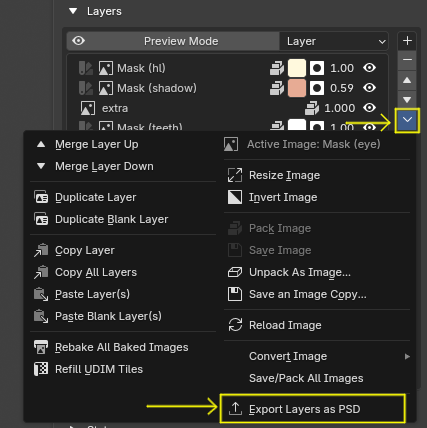
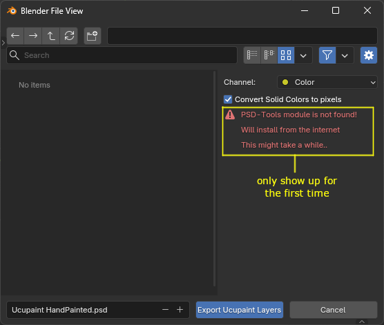
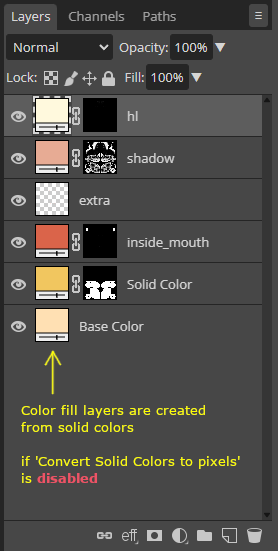
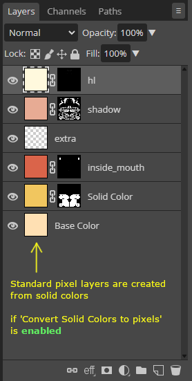
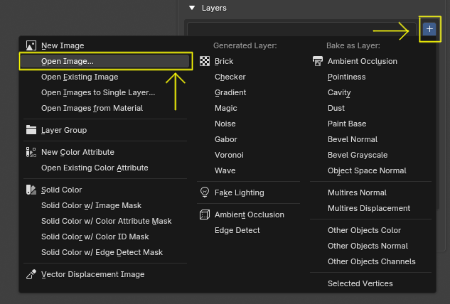
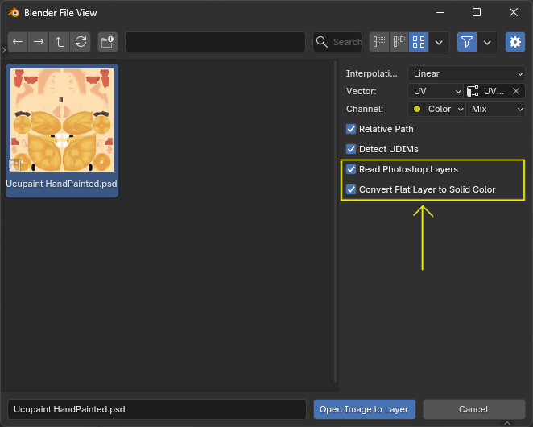
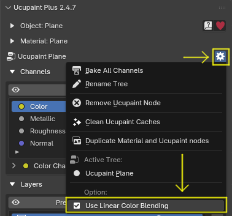

Export and Import Layers to PSD file¶
Warning
Currently, the export/import layers feature is available only in Ucupaint Plus, which you can get by becoming at least a silver Github sponsor
Ucupaint Plus supports exporting and importing layer data to and from PSD files. This feature lets you save your layers in a format compatible with other image editors that use PSD.
Export Layers to PSD¶
To export layers as PSD, press the special menu button beside the layer list (the one with V icon), and choose Export Layers as PSD.
 |
|---|
| Export layers to PSD button |
Then the export dialog box will appear.
 |
|---|
| Export layers to PSD dialog box |
Ucupaint uses PSD-Tools module to make PSD import and export work, so ucupaint will download the module the first time you do PSD export/import. The necessary space needed is about 50-80MB, so the download process might take a couple of seconds to minutes, depending on your internet connection.
There are two options for the export, the first one is Channel, which only layers that use that channel will be exported. The second option is Convert Solid Colors to pixels, this is to convert solid color layers to standard pixel layers. This is useful since not all 2D applications can read color fill layer from PSD file (example: Gimp).
The comparison below is the exported layers as shown in Photopea.
 |
 |
|---|---|
Convert Solid Colors to pixels disabled |
Convert Solid Colors to pixels enabled |
Import Layers from PSD¶
To import layers from a PSD file, you only need to open the image as layer. And there will be a menu to read the layers if you select a PSD file.
 |
|---|
| Open image as layer |
 |
|---|
Read Photoshop layers will show up when you select a PSD file |
The option Convert Flat Layer to Solid Color will detect the standard pixel image, and if the values are the same for all the pixels, it will be converted to a solid color layer.
Limitations¶
- Only layers with types of
Image,Solid Color, orGroupare currently supported for export - Group mask is currently not supported because of the PSD-Tools limitation
- PSD can only have one mask per layer, so only one image mask is supported for export
- Adjustment layers are not supported yet
- Modifiers from ucupaint are also not supported yet
Tips¶
If the color or the blending looks weird on your 2D app. Check the actual color by enabling the color channel's Preview Mode. And if it still looks too different, you can also try to disable Use Linear Color Blending. By disabling that, the blending colors between layers will be more similar to Photoshop.
 |
|---|
Use Linear Color Blending should be disabled to make the blending in ucupaint look the same as in Photoshop |
Video Demo¶
You can watch PSD layers export-import demo in Youtube.
 |
|---|
| Export-Import PSD Layers Demo in Ucupaint Plus 2.4.7 |